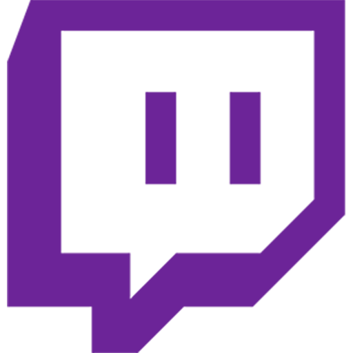
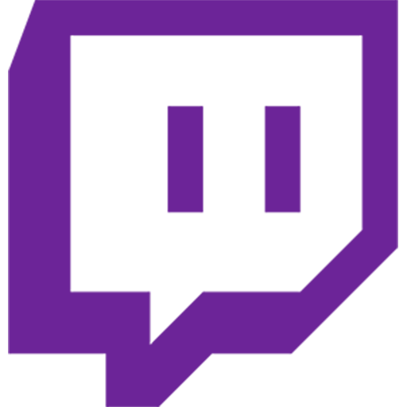

Who are you?
My name is Jackson. I'm a 19 year old college sophomore interested in math, computer science, music theory, composition and production. I like programming, dogs, web design, stand-up comedy, recreational mathematics, and diet soda. I'm in the #YangGang. My favorite color is #ff5d5d. I'm an ENFJ.
What is JCompose?
JCompose is my portfolio. I changed the name from 'Jackygames' after realizing that, a) having ‘games’ in the domain name basically guaranteed that my school would block it, and b) I wanted it to encompass all of my creative projects, not just games- to 'compose' just means to create, but it also references my musical compositions.
Why did you start making games / composing music?
I started programming so I could learn how to make plugins for Minecraft servers (which were in Java). Games were the easiest to make for me, allowed me to easily show other people what I'd been working on, and were just satisfying to complete and watch other people play. I started composing in my free time after enjoying writing music for band assignments.
Is JCompose done?
Hopefully, it will never be done-- as long as I have the drive to make music or program games, which are basically 2 of the only things I'm passionate about, I'll want to make lots of money and showcase my work to whoever wants to see it. Right now, I want to fix and finish some of my older games and upload some musical ideas I've been working on, but later down the line, I want to make multiplayer games and learn Python and really test myself.
Who made the art?
All of the images of the social media links are owned by their respective companies, I've just added a 50% opacity filter for hover effects. The name 'JCompose' was thought of by my girlfriend, Athena Jasman.
What are you working on right now?
These are my priorities, from most to least important:- More music
- Asteroids 2 shop
- Potatoman 2 levels
- Putting ads on the site
- Shank Your Nan 2
What happened to ___?
If you're a Jackygames veteran, you might notice that some of my older, less technically impressive games aren't on JCompose. This is for one of two reasons: 1) I deemed it not a good representation of my coding ability, which is the point of having an online portfolio, or 2) the code was lost or became corrupted- unfortunately, that's what happened to the original Shank Your Nan as well as Super Smash Bots Brawl.
Socials:

 



 Affiliate links:
Affiliate links: